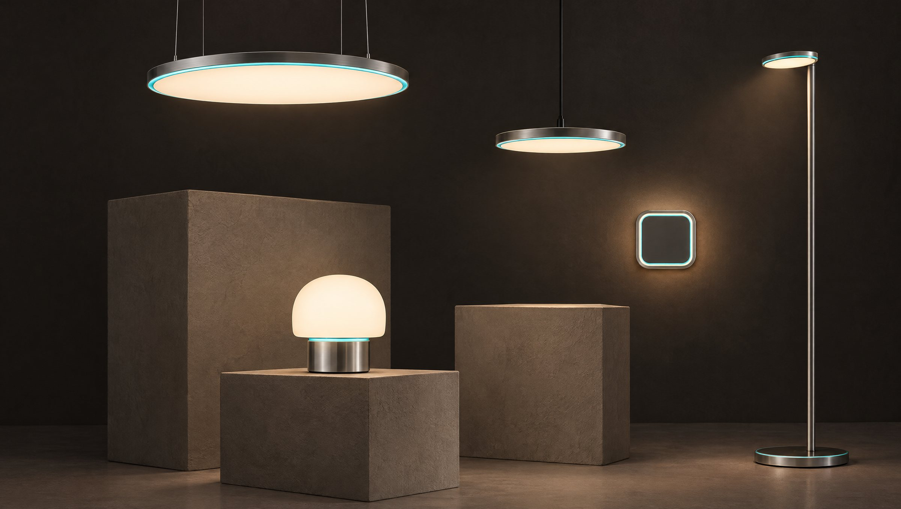

Bedside
Closest to sleep, so it reads the night best.

Brushed metal, opal glass, a warm glow. The noticing is built in, and out of sight.
Every room already has a light in the middle of the ceiling. It has the best view in the house.

Closest to sleep, so it reads the night best.

Over the table, where the day actually happens.

By the favourite chair.

Comes on low when feet touch the floor at night, and lights the way to the bathroom.

Light and sensing built into the joinery, for a room designed from scratch.
Concept collection. Designs in development.

One sensor sits at the heart of each light. It notices falls, heart rate, breathing and how the night went, with no camera. A thin line of light is the only sign it's there.

A care bed that looks like furniture, with sensing in the frame and the mattress.